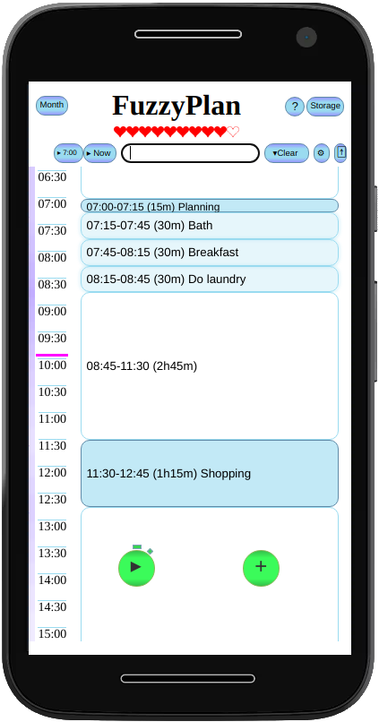
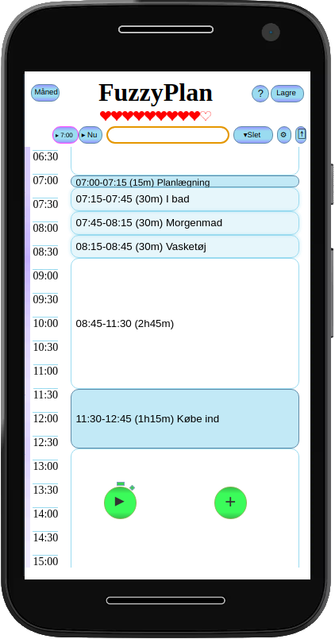

FuzzyPlan
Here will be a link to a YouTube tutorial
FuzzyPlan is a planning tool for those of us who hates plans and structure - but knows we need both.
It is hard to structure your day if you struggle with keeping all tasks and priorities in your head at the same time.
You could write them down, but writing them down makes rearranging tasks cumbersome, both on paper and in traditional calendars.
FuzzyPlan tries to address this by making tasks easily swappable and by making entering tasks at a given time and of a given length a breeze.
The green add-task button (+) helps you get started by providing a fairly traditional calendar interface, but the idea is to learn a few shorthand ways to quickly enter tasks.
Tasks can be swapped just by tapping them, and tasks can be edited by double tapping.
Templates helps you schedule around reccuring tasks and the Month View let you plan tasks in the future - and be reminded to put these tasks into the relevant day. Past days is stored to help you evaluate how you spend you days, and recurring tasks can be colour coded.
FuzzyPlan also feature a basic stress model (with healtbar!) to remind you to take breaks and not be overly ambitious when planning your day.
The web app will be hosted at fuzzyplan.madshorn.dk for as long as I can afford it. Hopefully a long time, but feel free to grab your own copy of the code at my Github repository for FuzzyPlan if you like the app :-)
FuzzyPlan is free to use under a MIT licence and ALL data is stored on your phone/computer. No data is collected by me.
I can't guarantee everything works and that you will be reminded as planned, so have important stuff in a traditional calendar with alarms too.
FuzzyPlan
Her kommer der et link til en YouTube tutorial
FuzzyPlan er et planlægningværktøj for de af os der hader planer og struktur - men som ved at vi behøver begge dele
Det er svært at strukturere sin dag, hivs man ikke kan holde alle opgaver og prioriteringer i hovedet.
Man kan skrive det hele ned, men det er svært at bytte om på opgaver skrevet på papir eller i traditionelle kalendere.
FuzzyPlan adresserer dette ved at gøre det nemt at bytte rundt på opgaver og hurtigt at skrive opgaver ind med vilkårlig længde og starttidspunkt.
Den grønne tilføj-opgave knap (+) hjælper en med at komme i gang ved at tilbyde et ret traditionelt kalender interface, men det er tanken at man hurtigt lærer en nemmere måde at gøre det på.
Opgaver kan byttes ved at tappe på dem efter hinanden, og opgaver kan rettes ved at dobbelt-tappe.
Skabeloner hjælper med at planlægge omkring de faste ting i din hverdag, og Månedsvisningen lader dig planlægge fremtidige opgaver - og blive mindet om disse opgaver når dagen kommer. De dage der er gået gemmes i Månedsvisningen for at hjælpe dig med at få overblik over hvordan du bruger din tid. Opgaver du gør tit kan farvekodes for let overblik.
FuzzyPlan har også en basal stressmodel (med healthbar!) der kan hjælpe dig med at huske at holde pauser og gøre dig opmærksom på hvis din planlægning begynder at blive overambitiøs :-)
HER kommer links til YouTube vejledninger der kan hjælpe dig i gang. Webappen vil ligge på fuzzyplan.madshorn.dk så længe jeg har råd. Det bliver forhåbentligt længe, men du hvis du kan lide appen, kan du hente kildekoden på mit Github repository
FuzzyPlan er udgivet under en MIT licens og er derfor gratis at bruge. ALLE date gemmes på din telefon/computer. Jeg indsamler ingen data overhovedet.
Jeg kan ikke garantere at alt virker og at du vil blive mindet om alle planlagte opgaver, så hav vigtige ting i en traditionel kalender med alarmer også.